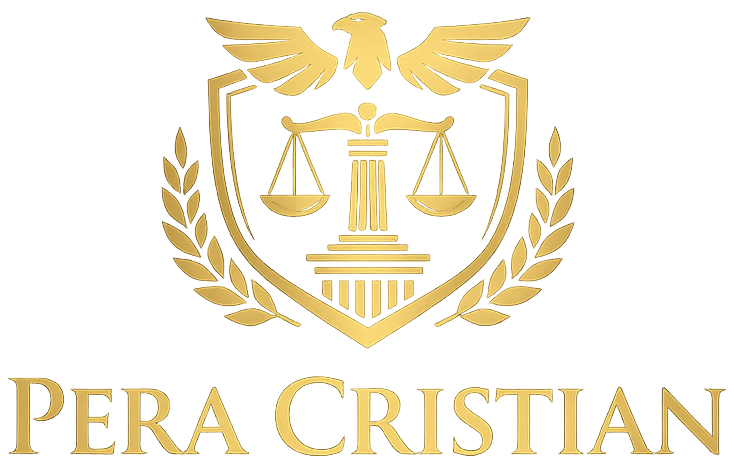

Consultanță juridică. Asistență. Reprezentare în instanță.
Cabinetul de Avocat Cristian Pera a fost înființat cu scopul de a oferi servicii juridice complete, adaptate nevoilor actuale ale clienților, atât persoane fizice, cât și persoane juridice.
Activitatea cabinetului este fundamentată pe principii esențiale precum confidențialitatea, profesionalismul și responsabilitatea în relația cu fiecare client.
Fiecare situație juridică este analizată individual, cu accent pe soluții clare, aplicabile și eficiente.
Clientela este formată din clienți români și străini care desfășoară activități economice în România sau care au interese juridice pe teritoriul României.
Cabinetul utilizează tehnologii moderne de comunicare, permițând prestarea serviciilor juridice atât prin interacțiune directă, cât și prin mijloace electronice, în funcție de natura cauzei și preferințele clientului.
Soluțiile juridice propuse urmăresc atât prevenirea riscurilor legale, prin informare și consultanță continuă, cât și apărarea efectivă a drepturilor clienților în cadrul procedurilor judiciare sau extrajudiciare.
Cabinetul oferă asistență juridică și reprezentare în următoarele domenii:
Consultanță juridică privind dreptul de proprietate, revendicări imobiliare - terenuri și construcții, intermedierea expertizelor, succesiuni și partaje, precum și în domeniul imobiliar în general. Asistență la redactarea contractelor și antecontractelor, precum și reprezentare în litigii aferente acestora. De asemenea, oferim suport juridic în materie de publicitate imobiliară, incluzând înscrieri în cartea funciară, rectificări și alte operațiuni specifice.
Asistență juridică în toate fazele procesului penal, apărarea inculpaților pentru orice categorie de infracțiuni, precum și consultanță juridică în probleme specifice dreptului penal. Reprezentare sau asistare a părții vătămate, a părții civile ori a părții responsabile civilmente, precum și promovarea plângerilor și a căilor de atac împotriva hotărârilor judecătorești.
Consultații juridice privind relațiile de familie, divorțuri și partajarea bunurilor comune, încredințarea minorilor și stabilirea programului de vizitare, pensia alimentară, adopțiile, precum și aspecte de drept internațional referitoare la relațiile de familie.
Înființarea de societăți comerciale, modificarea actelor constitutive, precum și consultanță juridică pentru toate activitățile cu profil comercial. Asistență în intermedierea studiilor de fezabilitate, redactarea și susținerea acțiunilor comerciale, inclusiv recuperarea debitelor, obligații de a face, cereri de reorganizare sau de declanșare a procedurii falimentului.
Asistență juridică și consultanță în domeniul transporturilor maritime, feroviare, rutiere și aeriene, incluzând redactarea și analiza contractelor de transport, soluționarea litigiilor specifice, răspunderea transportatorilor, avarii, întârzieri, precum și reprezentarea în relația cu autoritățile competente.
Asistență juridică acordată clienților anterior participării la proceduri de achiziție publică și licitații ce implică finanțări publice și europene, precum programele SAPARD și PHARE. În situația în care rezultatul participării la licitații nu este satisfăcător, este asigurată asistență juridică și reprezentare în procedurile de contestare a rezultatelor acestora.
Consultații juridice privind contractele individuale de muncă, litigii de muncă referitoare la dreptul la muncă și încadrarea în muncă, precum și aspecte legate de executarea, încetarea sau desfacerea contractului de muncă. Asistență juridică în materia sistemului de pensii, incluzând stabilirea și plata drepturilor de pensie.
Asistență juridică în cauze cu element de extraneitate, incluzând situații privind partea străină sau domiciliul în străinătate, procedura de exequatur, convențiile internaționale și aplicabilitatea acestora în România, precum și activitatea societăților comerciale străine pe teritoriul României.
Activități de asigurare a asistenței juridice permanente a societății în probleme referitoare la taxe și impozite, precum și verificarea actelor societății și a contractelor încheiate de aceasta, în vederea conformității cu legislația română și a evaluării riscurilor și profitabilității investițiilor. Asistență în alte acte administrative și activități de audit.
Reprezentare în litigii și cercetări documentare în domeniul proprietății intelectuale și industriale, înregistrarea invențiilor, brevetelor și mărcilor de comerț, precum și înregistrarea internațională a mărcilor. Asistență juridică în cazuri de concurență neloială, importuri paralele ilegale, piraterie și utilizarea de copii ilegale, precum și în toate aspectele apărute din sau în legătură cu protejarea acestor drepturi, inclusiv în faza litigioasă.
Consultanță juridică, redactarea acțiunilor în justiție, asistență juridică și reprezentare în litigii de contencios administrativ, inclusiv în proceduri de anulare a actelor emise de administrația publică locală.
Asistență juridică în soluționarea amiabilă a disputelor, prin analizarea și evaluarea situațiilor concrete anterior sesizării instanțelor de judecată, în vederea medierii, negocierii și concilierii, atât în materie comercială, cât și în raporturi juridice private.
Cabinetul colaborează cu notari publici, executori judecătorești, experți tehnici și alți profesioniști independenți, în funcție de specificul fiecărei cauze.
De asemenea, dispune de infrastructură informatică modernă, acces permanent la legislație și jurisprudență națională și europeană, inclusiv la hotărârile Curții Europene a Drepturilor Omului.
Informațiile prezentate pe acest site au caracter strict informativ și nu constituie consultanță juridică.
Utilizarea conținutului site-ului nu creează o relație avocat-client.